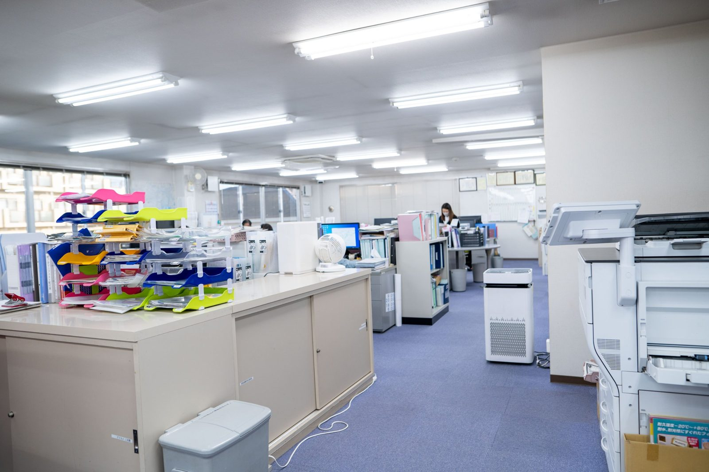

松野さん
「現場にはそれぞれの担当があり、必要なときに手を貸す」という現場の進め方を話しています。約30年、現場に立ってきました。
RECRUIT / YOUR NEXT CHAPTER
道路や水道を支える仕事を、この先も続けていくために。今いる社員が積み重ねてきた経験と、新しく加わる人の力をつないでいきたい。まずは、仕事の中身も、働く人も、会社の考え方も知ってください。
いいところだけではなく、仕事のリアルも伝えます。
MESSAGE FROM THE REPRESENTATIVE 代表から
大切なのは、自分で考え、周りと関わりながら進んでいくこと。
私は18歳で久留米興業に入り、現場の見習いから仕事を始めました。若い頃は働き方に悩み、一度会社を離れた経験もあります。その後、現場や管理の仕事を重ね、経営する立場になってから、会社を続けていくことと、働く人を大切にすることを両方考えるようになりました。
久留米興業の仕事は、道路や水道など、暮らしの当たり前を支えることです。必要な仕事だからこそ、次の人へ技術や経験を渡しながら続けていかなければなりません。
経験や学歴だけで人を判断したいとは思っていません。分からないことを聞き、自分でも考え、目の前の仕事を一つずつ覚えていく。失敗することがあっても、そこから学び、周りと力を合わせられる人と働きたいと思っています。
仕事の内容も、働く上で大変なことも、きちんと知ったうえで入社してほしいです。そして、いつか振り返った時に「ここで働いて良かった」と思える会社にしていきたい。それが私の願いです。
代表取締役 川島 和範
川島代表の歩みを読む
代表の写真は、同じ写真を別ページで使い回さないため、このセクションでは載せていません（代表の写真はTOP・会社について・働くスタッフ・会社情報で、それぞれ別の写真を使用）。
TWO ROLES 2つの職種
人と現場をつなぎ、工事を進める営業職。現場で作業を担い、街の形をつくる現場職。仕事の大変さも、初めに覚えることも違います。自分に合う働き方を、仕事内容から考えてみてください。
SALES / COORDINATION 営業職
久留米興業の営業職は、商品を売って終わりという仕事ではありません。取引先からの相談を聞き、工事の内容や現場の状況を確認し、見積、材料、工程、人の手配を考えながら、現場が円滑に進むように調整します。営業経験だけでなく、施工の知識や、現場で働く人とのコミュニケーションが必要になる仕事です。

PCの設定などを行い、会社と仕事の基本を知る。
複数の先輩に順番に同行し、取引先や現場へ。用語や仕事の流れ、人との関わりを学ぶ。
現場調査、材料の運搬、取引先との会議、緊急対応の補助を通じて段取りを覚える。
見積、会議、外注の手配、現場の調整、案件の管理へ。
時期は目安です。仕事の覚え方によって、任される範囲や時期は異なります。
大変なところ
仕事に慣れない間は、現場の言葉が分からず戸惑うこともあります。緊急の工事があれば、時間外や休日に連絡が入る可能性もあります。先輩の仕事を見ながら学び、少しずつ任される範囲を広げていく仕事です。
FIELD WORK / ON THE ROAD 現場職
舗装や水道などの工事現場で、作業の準備、機材の扱い、施工の補助などを担当します。現場には、その日の作業を安全に終わらせるための段取りがあります。初めから全てを任されるのではなく、先輩の動きを見たり、分からないことを聞いたりしながら、担当できることを増やしていきます。

入社後は早い段階から現場に入り、作業の流れや安全上の注意を知るところから始まります。
カラーコーンの準備など、指示を受けてできることから始め、周囲の動きを学びます。
先輩に聞き、班の中で必要な役割を覚え、やがて次の動きを考えられるようになることを目指します。
大変なところ
夏の暑さや夜間作業、限られた時間内に作業を終える大変さがあります。現場では会話が少なく、黙々と作業を進める時間もありますが、危険な場面や分からないことがあれば声を掛け合いながら仕事を進めます。
「現場にはそれぞれの担当があり、必要なときに手を貸す」という現場の進め方を話しています。約30年、現場に立ってきました。
建築業界から土木へ。最初から仕事を知っていたわけではなく、班長の動きを見たり、分からないことを聞いたりして仕事を覚えてきました。
THE REALITY OF WORK 仕事のリアル
働き方は見直してきましたが、今も忙しさや責任はあります。職種ごとの実態をお伝えします。

BENEFITS & WORK LIFE 制度と暮らし
資格取得や住まいなど、長く働くための制度をご案内します。

現場職は資格取得の費用を会社が全額負担します。営業職では、入社後に1級土木施工管理技士を取得した社員もいます。
対象職種を見る ↓営業職は土日祝休み。現場職は第2土曜・日曜・祝日に加えて、GW・夏季・年末年始に連休があります。
募集要項で確認する ↓鍵付きの個室寮があります。空室や利用条件は、応募時点の最新情報をご確認ください。
寮についての質問 ↓社会保険完備、賞与年2回、昇給年1回。運転無事故手当や資格手当などがあります。
手当の内訳を見る ↓夏場は10時と15時に小休憩をとり、会社から冷えたドリンクを支給しています。
現場の大変さも見る ↑社員旅行などの社内行事は、実施状況と参加ルールを確認してから掲載します。
REAL EMPLOYEE STORIES 社員の声
入社した理由も、大変だったことも、一人ひとり違います。
営業職
お茶の営業から転職し、最初は工事の知識も分からなかった根岸さん。仕事を通じて現場を学び、1級土木施工管理技士を取得。今では公共工事の現場代理人として、協力会社との調整などを担っています。
インタビュー全文を読む ↗学生時代に土木を学んでいたわけではなく、初めての会社として久留米興業に入社。現場の用語や仕事の流れに戸惑いながら、周りの助言を受けて少しずつ現場の知識を増やしてきました。
インタビュー全文を読む ↗広告業界から転職し、工事の知識がなく戸惑った今井さん。現場の職人から厳しい指摘を受けたこともありましたが、足を運んで話を聞き、段取りや情報共有の方法を学んできました。
インタビュー全文を読む ↗現場職
楽な仕事ではありません。それでも、役割を分け、聞きながら、毎日の仕事を積み重ねている人がいます。
班長として役割分担を考え、現場全体の進み具合を見ながら作業を進める松野さん。新人には最初から全部を求めず、現場に出て少しずつ覚えてほしいと話しています。
建築工事の経験を経て久留米興業の土木現場へ。班長の仕事を見ながら覚え、分からないことは聞き、仲間と1日の仕事を終わらせてきた経験を話しています。
CAREER & GROWTH キャリア
経験に応じて、できる仕事を少しずつ増やしていきます。

先輩への同行、現場と取引先の理解。
評価：覚える姿勢、勤務態度、報告・連絡・相談現場調査、日程・人・材料の連携、取引先との関係づくり。
評価：現場との調整力、関係構築見積・提案・外注の手配・案件の管理、資格の取得。
評価：任せられる仕事の範囲、成果、資格現場の流れ・安全・作業準備を見て覚える。
評価：続けること、基本の動き、安全への意識施工の補助、機材の扱い、班内の役割。
評価：任せられる作業の範囲、周囲への気配り重機の資格、現場の段取り、後輩への説明、副責任者の役割を目指す。
評価：班長などからの評価、役割の広がり昇給は年1回（7月）です。できるようになった仕事が増え、周囲からの信頼が積み重なることは、役割や評価につながります。収入の条件は職種別の募集要項でご案内します。
昇給時期は「年1回7月」と「随時」の表記が混在しています。公開前に評価の運用と支給時期を統一してください。年収モデルは内訳が確認できるまで載せていません。
説明マンガ（#recruit-manga）は未制作のため、セクションごと表示していません。
OPEN POSITIONS 募集要項
職種ごとの給与・休日・勤務地・必要資格です。
| 雇用形態 | 正社員 |
|---|---|
| 仕事内容 | 取引先対応、現場調査、見積、材料・外注の手配、現場との連携 |
| 勤務地 | 東京都世田谷区北烏山6-26-28（本社） |
| 給与 | 月給320,000円以上 これまでの経験や保有資格を考慮して決定 |
| 休日 | 年間休日130日・土日祝休み |
| 時間外の対応 | 工事の状況により、夜間・休日に連絡が入ることがあります |
| 手当 | 運転無事故手当 月3万円／皆勤手当 月2万円／資格手当 |
| 待遇 | 昇給年1回／賞与年2回／資格取得支援制度／社会保険完備／交通費規定支給／退職金制度／定期健康診断 |
| 必須 | 普通自動車免許（AT限定可） |
【要確認】勤務時間の表記、年間休日（127日／130日）、時間外対応の手当・代休の扱いを統一してください。
営業職に応募する （外部サイトが開きます）| 雇用形態 | 正社員 |
|---|---|
| 仕事内容 | 現場施工、作業の準備、安全確認、班内での分担 |
| 勤務地 | 本社集合（東京都世田谷区北烏山6-26-28）後、各現場へ |
| 給与 | 日給14,000円〜21,000円 月給換算 358,000円〜575,000円（基本給＋手当込み） 経験やスキルを考慮して決定 |
| 勤務時間 | 8:30〜17:30（実働7.5時間／休憩1.5時間）※現場による 現場・時期により夜間作業（21:00〜翌6:00）あり |
| 休日 | 第2土曜日・日曜日・祝日 GW・夏季・年末年始（各6〜9日程度の連休） 有給休暇・慶弔休暇 |
| 手当 | 運転無事故手当 月3万円／精勤手当 月2万円／資格手当／交通費規定支給（月2万円まで） |
| 待遇 | 昇給年1回／賞与年2回／資格取得費用は会社が全額負担／社会保険完備／退職金制度（勤続3年以上）／鍵付き個室寮／定期健康診断 |
| 必須 | 普通自動車免許（AT限定可）。学歴・職歴・経験は問いません |
【要確認】夜間作業の頻度・対象、休憩の取得状況、寮費の現在額を確認してください。
現場職に応募する （外部サイトが開きます）条件は2026年11月時点のものです。最新の条件は各求人ページをご確認ください。
各求人ページからエントリーします。
応募内容を確認したあと、採用担当からご連絡します。
書類の提出と面談の日程をご案内します。
選考の回数や期間は、職種や状況によって異なります。
FREQUENTLY ASKED QUESTIONS よくある質問
現在の募集は未経験の方も対象です。営業職と現場職では、最初に覚えることが違います。経験の有無だけで判断せず、仕事内容と条件を確認したうえでご応募ください。
取引先との調整や現場の段取りが中心で、飛び込みの新規開拓や個人ノルマはありません。担当する範囲は面談でも詳しくご説明します。
まず複数の先輩に同行し、現場と取引先の仕事を知るところから始めます。一人で担当する範囲は、仕事の覚え方に合わせて広げていきます。
現場の流れや安全上の注意を知ることから始まります。先輩の動きを見て覚え、指示を受けながらできる仕事を増やしていきます。
暑さや夜間作業、限られた時間内に施工を終える大変さがあります。現場の社員も、実際に感じている難しさを率直に話しています。
感じ方は人それぞれですが、営業職・現場職のどちらの社員も、必要なときに先輩に質問することや、役割を分けて協力していることを話しています。詳しくは社員の声をご覧ください。
営業職は土日祝休みで年間休日130日です。現場職は第2土曜・日曜・祝日が休みで、GW・夏季・年末年始に連休があります。担当工事や緊急対応によって休日に連絡が入ることもあります。
あります。現場職は資格取得の費用を会社が全額負担します。営業職でも、入社後に1級土木施工管理技士を取得した社員がいます。
職種・経験・担当できる仕事・資格をもとに決めます。営業職は月給32万円以上、現場職は日給14,000円からです。詳しくは募集要項をご確認ください。
鍵付きの個室寮があります。空室、寮費、利用条件は応募時点の最新情報をご確認ください。
現場見学の案内があります。日程・場所・安全上の条件は、事前にお問い合わせください。
対応可否と利用ツールは、会社の案内に従います。
応募内容を確認したあと、採用担当からご連絡し、書類提出や面談日程をご案内します。選考の回数や期間は職種や状況によって異なります。
JOIN US
働く場所を選ぶことは、毎日の時間の使い方や、これからの暮らしを選ぶことでもあります。少しでも久留米興業の仕事や考え方に興味を持っていただけたら、募集内容をご確認ください。